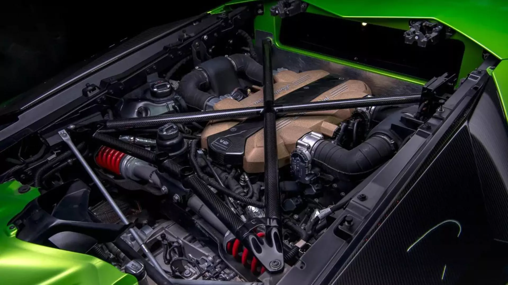

Lamborghini Aventador é centrada em um motor V12 naturalmente aspirado e em uma construção de alta performance:
Motor: V12 de 6,5 litros (código L539), desenvolvendo entre 700 cv e 770 cv (na versão SVJ), com torque de até 69–74 kgfm.
Transmissão: Automatizada ISR (Independent Shifting Rods) de 7 velocidades, com tração integral permanente.
Capacidade de Óleo: Aproximadamente 12,5 a 13,4 litros de óleo de motor (geralmente especificação sintética de alta performance como 5W30).
Chassi e Suspensão: Monocoque em fibra de carbono, suspensão do tipo push-rod inspirada na Fórmula 1 e, em versões como a SVJ, eixo traseiro esterçante e aerodinâmica ativa.
Manutenção no Brasil: Pode ser realizada em oficinas especializadas em superesportivos (como a Veloce Auto Especialista na Zona Norte de São Paulo ou a PitStopShop), que oferecem diagnóstico eletrônico, revisões e troca de fluidos específicos.
